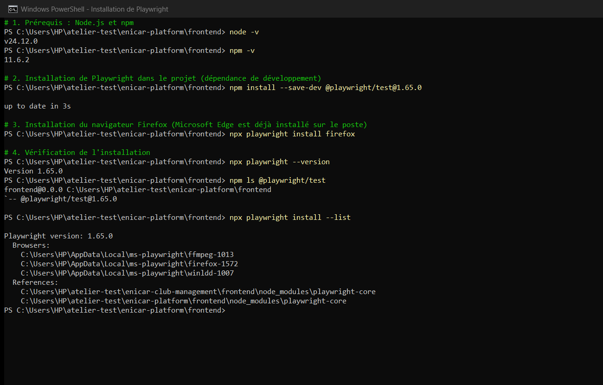
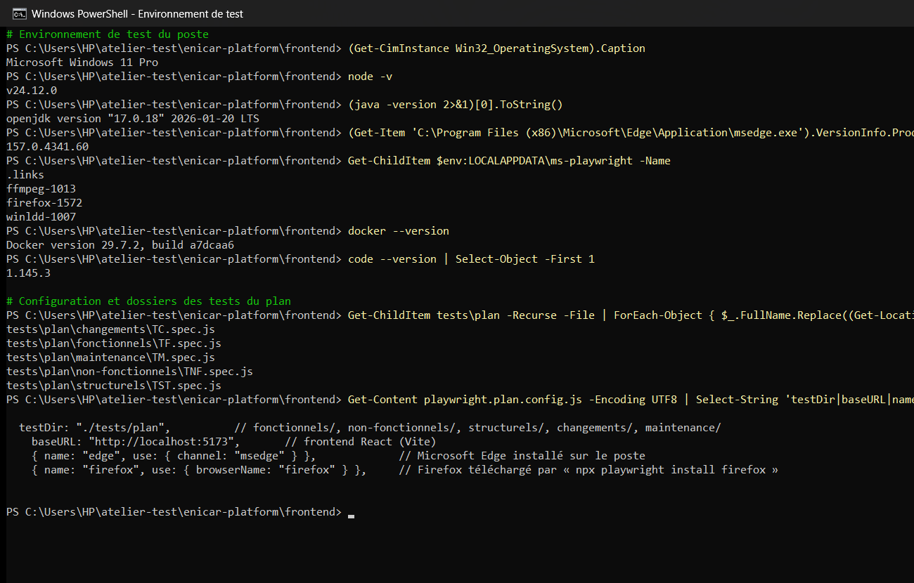
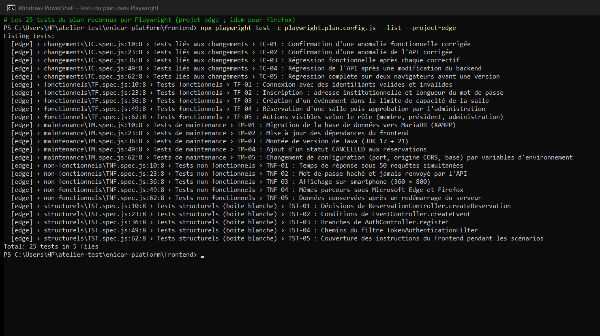
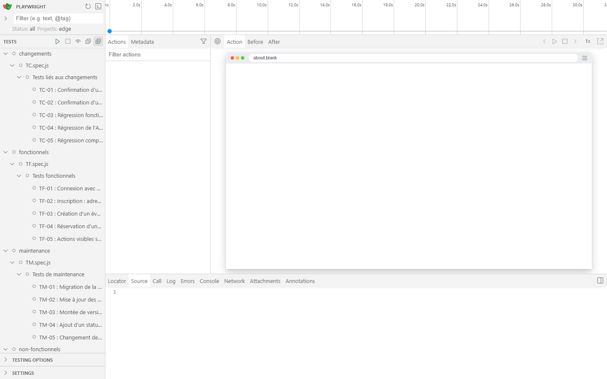
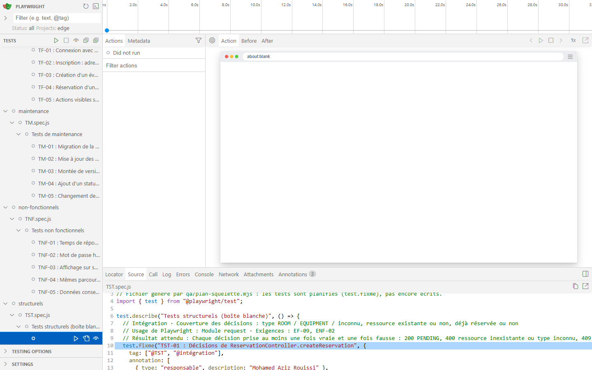

Ce rapport présente notre projet pour l'atelier de test logiciel : une plateforme web de gestion des clubs de l'ENICarthage. Il suit l'organisation demandée par l'encadrant : il réunit le compte rendu 1 (CR1) et le compte rendu 2 (CR2), complétés par la spécification des besoins, l'architecture et la conception, puis soumis à une revue formelle.
| Livrable | Contenu | Chapitres |
|---|---|---|
| CR1 | Description du projet (D.P.) et outil de gestion des tests (O.G.T.) | 2, 3 |
| CR2 | Plan de test (P.T.), livré sous forme de document et saisi dans l'outil de gestion des tests ; outil de test retenu | 4, 5, 6 |
| CR3 — rapport | CR1 + CR2 + spécification des besoins, architecture, conception ; revue formelle du rapport | 1 à 11 |
La vie associative de l'ENICarthage repose sur de nombreux clubs. Leur gestion (création des clubs, organisation des événements, réservation des salles et du matériel, validation par l'administration) se fait aujourd'hui par des échanges dispersés, sans vue d'ensemble ni traçabilité. Une même salle peut être demandée deux fois pour la même date, et l'administration n'a pas de tableau de bord commun.
| Profil | Rôle technique | Ce qu'il peut faire |
|---|---|---|
| Visiteur | — | S'inscrire (adresse institutionnelle @enicar.tn) et se connecter |
| Membre de club | CLUB_MEMBER | Consulter les clubs et les événements, réserver une salle ou un équipement, suivre ses réservations, consulter son profil |
| Président de club | CLUB_PRESIDENT | Tout ce que fait un membre, plus créer et supprimer les événements de son club |
| Administration | ADMINISTRATOR | Créer les clubs et le compte de leur président, gérer les salles et les équipements, approuver ou rejeter les réservations |
| Module | Fonctionnalités |
|---|---|
| Authentification | Inscription, connexion, déconnexion, session conservée dans le navigateur |
| Tableau de bord | Nombre de clubs, d'événements, de salles et de membres ; événements récents ; clubs actifs |
| Clubs | Liste ; création d'un club avec le compte de son président ; suppression |
| Événements | Liste ; création pour son club (salle, date, nombre de participants) ; suppression |
| Salles et équipements | Liste avec capacité et type ; ajout par l'administration |
| Réservations | Demande d'un membre ; approbation ou rejet par l'administration |
| Compte | Profil, paramètres, notifications |
L'outil de gestion des tests (O.G.T.) retenu est GitHub, qui héberge déjà le code du projet. Il gère dans un même dépôt les exigences, les tests, les campagnes, les anomalies et leurs corrections, avec la traçabilité entre eux.
gh).| Fonction d'un outil de gestion des tests | Réalisation dans GitHub |
|---|---|
| Référentiel des exigences | Une issue par exigence, titrée [EF-xx] ou [ENF-xx], avec les libellés exigence et sa criticité (critique, majeure, mineure) |
| Tests | Une issue par test, titrée [TF-xx], [TNF-xx] ou [API-xx], avec le libellé de sa famille (fonctionnel, non fonctionnel, api), l'objet, le résultat attendu, la technique et les exigences vérifiées |
| Responsable d'un test | Le champ Assignees de l'issue |
| Traçabilité | Dans chaque test, la ligne « Vérifie #n » renvoie aux issues des exigences ; GitHub affiche le lien dans les deux sens |
| Campagne de test | Un jalon (milestone) par campagne : il regroupe les tests à exécuter sur une version et affiche leur avancement |
| Résultats d'exécution | Un commentaire de résultat sur l'issue du test, puis sa fermeture |
| Anomalies | Une issue [ANO-xx] par anomalie : gravité, étapes de reproduction, exigence concernée, test qui l'a détectée |
| Correction | Une Pull Request dont la description contient « Fixes #n » : sa fusion ferme automatiquement l'anomalie |
| Suivi visuel | Un tableau GitHub Projects avec les colonnes À faire → En cours → Corrigée → Re-testée → Fermée |
| Étape | Dans GitHub | Qui |
|---|---|---|
| Détectée | Issue [ANO-xx] créée, liée au test et à l'exigence | Responsable du test |
| Confirmée | Reproduite, gravité fixée (libellé), colonne « À faire » | Chef d'équipe |
| Corrigée | Pull Request « Fixes #n », colonne « Corrigée » | Développeur |
| Re-testée | Le test est rejoué ; résultat en commentaire, colonne « Re-testée » | Responsable du test |
| Fermée | Fusion de la Pull Request ; colonne « Fermée » | Chef d'équipe |
Ce plan suit la structure de la norme IEEE 829 / ISO/IEC/IEEE 29119-3 et les deux premiers chapitres du cours (« Fondamentaux des tests » et « Tester pendant le cycle de vie »). Il prévoit 5 tests pour chacun des 5 types de test du cours, soit 25 tests, répartis sur les niveaux d'intégration, système et acceptation.
| Dans le périmètre | Hors périmètre |
|---|---|
| Authentification, inscription, rôles · clubs · événements · salles · équipements · réservations · tableau de bord · profil, paramètres, notifications · sécurité de l'API · performance · robustesse · affichage mobile · compatibilité · maintenabilité · dépendances · persistance · portabilité de la base | Déploiement en production ; envoi d'e-mails (non prévu) ; accessibilité avancée (lecteurs d'écran) |
Le plan retient 25 tests : 5 tests fonctionnels, 5 tests non fonctionnels, 5 tests structurels, 5 tests liés aux changements, 5 tests de maintenance. À l'intérieur de chaque type, les tests sont choisis en priorité sur les risques les plus élevés, de sorte que toutes les exigences critiques soient couvertes.
| Risque produit | Probabilité | Impact | Priorité | Tests prévus |
|---|---|---|---|---|
| Action d'administration par un utilisateur non autorisé | Élevée | Critique | P1 | TF-05, TST-04 |
| Fuite des mots de passe | Moyenne | Critique | P1 | TNF-02, TST-03 |
| Double réservation d'une salle | Moyenne | Majeur | P1 | TF-04, TST-01 |
| Événement dépassant la capacité d'une salle | Moyenne | Majeur | P1 | TF-03, TST-02 |
| Une correction casse une fonction qui marchait | Élevée | Majeur | P1 | TC-01 à TC-05 |
| Lenteur en période d'inscription | Faible | Majeur | P2 | TNF-01 |
| Mauvais affichage sur smartphone | Moyenne | Moyen | P2 | TNF-03 |
| Perte de données au redémarrage ou lors d'une migration | Faible | Critique | P2 | TNF-05, TM-01 |
| Mise à jour (dépendances, Java) qui rend l'application inutilisable | Moyenne | Majeur | P2 | TM-02, TM-03 |

| Niveau | Objectif | Tests | Usage de Playwright |
|---|---|---|---|
| Intégration | Vérifier l'API avec la sécurité et la base de données réelles | TNF-02, TST-01, TST-02, TST-03, TST-04, TC-02, TC-04, TM-01, TM-03 | Module request |
| Système | Vérifier l'application complète dans un navigateur | TF-01, TF-02, TF-03, TF-05, TNF-01, TNF-03, TNF-04, TNF-05, TST-05, TC-01, TC-03, TC-05, TM-02, TM-04, TM-05 | Navigateur, émulation smartphone, projets Edge / Firefox |
| Acceptation | Valider le besoin du point de vue de chaque profil | TF-04 | Navigateur, scénario multi-profils |
| Unitaire | Vérifier chaque composant isolément | — | Hors de ce plan : Playwright teste à travers l'interface et l'API (§ 5.5) |
Le chapitre 2 du cours distingue cinq types de test. Chacun répond à une question différente ; le plan en prévoit 5 de chaque.
| Type | Question | Définition (cours, chapitre 2) | Tests | Responsable |
|---|---|---|---|---|
| Tests fonctionnels | Que fait le système ? | Ils évaluent les fonctionnalités que le système doit réaliser, à partir des spécifications (exigences, cas d'utilisation, règles de gestion). | TF-01, TF-02, TF-03, TF-04, TF-05 | M. Hosni Missaoui |
| Tests non fonctionnels | Comment le système fonctionne-t-il ? | Ils évaluent les caractéristiques du système : performance, sécurité, utilisabilité, compatibilité, fiabilité. | TNF-01, TNF-02, TNF-03, TNF-04, TNF-05 | M. Bouchahda |
| Tests structurels (boîte blanche) | Comment le système est-il construit ? | Ils sont conçus à partir de la structure interne du code (décisions, conditions, chemins) et mesurent la couverture atteinte. Ils sont exécutés au niveau de l'API (intégration). | TST-01, TST-02, TST-03, TST-04, TST-05 | M. Aziz Rouissi |
| Tests liés aux changements | La correction fonctionne-t-elle sans rien casser ? | Tests de confirmation : rejouer les tests qui ont échoué après la correction. Tests de régression : rejouer les tests existants pour vérifier qu'une modification n'a pas introduit de défaut ailleurs. | TC-01, TC-02, TC-03, TC-04, TC-05 | M. Hosni Missaoui |
| Tests de maintenance | Le système reste-t-il correct après une évolution ? | Effectués sur le système existant lors de modifications, de migrations ou de mises à jour : tests des modifications puis tests de régression. | TM-01, TM-02, TM-03, TM-04, TM-05 | M. Bouchahda |
Ils vérifient ce que fait l'application : les règles métier des exigences fonctionnelles, en boîte noire.
| Test | Objet | Résultat attendu | Niveau | Technique | Exigences | Responsable |
|---|---|---|---|---|---|---|
| TF-01 | Connexion avec des identifiants valides et invalides | Identifiants valides : accès au tableau de bord ; sinon message « Email ou mot de passe incorrect » | Système | Partitions d'équivalence | EF-01 | M. Hosni Missaoui |
| TF-02 | Inscription : adresse institutionnelle et longueur du mot de passe | 5 caractères ou adresse non institutionnelle refusés ; 6 caractères et @enicar.tn acceptés, rôle CLUB_MEMBER | Système | Valeurs limites (5 / 6 caractères), partitions (@enicar.tn / @gmail.com) | EF-02 | M. Hosni Missaoui |
| TF-03 | Création d'un événement dans la limite de capacité de la salle | 40 participants : événement créé, statut PENDING ; 41 : refus avec message | Système | Valeurs limites (40 / 41 participants pour 40 places) | EF-06 | M. Hosni Missaoui |
| TF-04 | Réservation d'une salle puis approbation par l'administration | La réservation passe de PENDING à APPROVED ; une seconde réservation de la même salle à la même date est refusée | Acceptation | Transitions d'états (PENDING → APPROVED / REJECTED) | EF-09 | M. Hosni Missaoui |
| TF-05 | Actions visibles selon le rôle (membre, président, administration) | Un membre ne voit ni création ni suppression ; le président gère les événements de son club ; l'administration gère clubs, salles et réservations | Système | Table de décision rôle × action | EF-03, EF-04, EF-05, EF-07 | M. Hosni Missaoui |
Ils vérifient comment se comporte l'application : une caractéristique de qualité par test (performance, sécurité, utilisabilité, compatibilité, fiabilité).
| Test | Objet | Résultat attendu | Niveau | Technique | Exigences | Responsable |
|---|---|---|---|---|---|---|
| TNF-01 Performance | Temps de réponse sous 50 requêtes simultanées | 95 % des requêtes en moins de 500 ms, aucune erreur | Système | Mesure sous charge | ENF-03 | M. Bouchahda |
| TNF-02 Sécurité | Mot de passe haché et jamais renvoyé par l'API | Aucun champ password ni hash BCrypt dans les réponses de connexion et d'inscription | Intégration | Inspection des réponses | ENF-01 | M. Bouchahda |
| TNF-03 Utilisabilité | Affichage sur smartphone (360 × 800) | Pas de défilement horizontal ; contenu sur au moins 80 % de la largeur | Système | Émulation d'écran, mesure de mise en page | ENF-04 | M. Bouchahda |
| TNF-04 Compatibilité | Mêmes parcours sous Microsoft Edge et Firefox | TF-03 et TF-05 donnent le même résultat dans les deux navigateurs | Système | Exécution sur deux navigateurs | ENF-05 | M. Bouchahda |
| TNF-05 Fiabilité | Données conservées après un redémarrage du serveur | Clubs, événements et réservations identiques avant et après le redémarrage | Système | Comparaison avant / après redémarrage | ENF-08 | M. Bouchahda |
Ils sont conçus en lisant le code : chaque décision, condition ou chemin du code testé est exercé au moins une fois. Les quatre premiers visent les contrôleurs et le filtre de sécurité du backend, à travers l'API ; le cinquième mesure la couverture du code du frontend pendant les scénarios.
| Test | Objet | Résultat attendu | Niveau | Technique | Exigences | Responsable |
|---|---|---|---|---|---|---|
| TST-01 | Décisions de ReservationController.createReservation | Chaque décision prise au moins une fois vraie et une fois fausse : 200 PENDING, 400 ressource inexistante ou type inconnu, 409 double réservation | Intégration | Couverture des décisions : type ROOM / EQUIPMENT / inconnu, ressource existante ou non, déjà réservée ou non | EF-09, ENF-02 | M. Aziz Rouissi |
| TST-02 | Conditions de EventController.createEvent | Chaque condition de refus donne 400 avec son message ; le chemin nominal donne 200 et le statut PENDING | Intégration | Couverture des conditions : titre vide, club inexistant, salle inexistante, participants < 0 ou > capacité, date invalide ou passée | EF-06 | M. Aziz Rouissi |
| TST-03 | Branches de AuthController.register | Les 4 branches d'erreur renvoient 400 ; la branche nominale renvoie 200 avec le rôle CLUB_MEMBER | Intégration | Couverture des branches : nom vide, e-mail non institutionnel, mot de passe < 6, e-mail déjà utilisé, chemin nominal | EF-02 | M. Aziz Rouissi |
| TST-04 | Chemins du filtre TokenAuthenticationFilter | Les 3 premiers chemins laissent la requête non authentifiée (401 sur une ressource protégée) ; le jeton valide authentifie (200) | Intégration | Couverture des chemins : sans en-tête, en-tête sans « Bearer », jeton inconnu, jeton valide | EF-03, ENF-02 | M. Aziz Rouissi |
| TST-05 | Couverture des instructions du frontend pendant les scénarios | Au moins 70 % des instructions des pages testées exécutées ; les parties non couvertes sont listées | Système | Mesure de couverture des instructions (page.coverage, navigateur Edge) | ENF-06 | M. Aziz Rouissi |
Ils sont exécutés après une modification : les tests de confirmation rejouent le test qui avait échoué pour vérifier la correction ; les tests de régression rejouent les tests existants pour vérifier que rien d'autre n'a été cassé.
| Test | Objet | Résultat attendu | Niveau | Technique | Exigences | Responsable |
|---|---|---|---|---|---|---|
| TC-01 Confirmation | Confirmation d'une anomalie fonctionnelle corrigée | Le test qui avait échoué (TF-xx) réussit sur la version corrigée | Système | Ré-exécution du test fonctionnel qui a échoué, sans le modifier | EF-01, EF-02, EF-03, EF-06, EF-09 | M. Hosni Missaoui |
| TC-02 Confirmation | Confirmation d'une anomalie de l'API corrigée | Le test de l'API qui avait échoué (TST-xx ou TNF-02) réussit sur la version corrigée | Intégration | Ré-exécution du test d'API qui a échoué | ENF-02 | M. Hosni Missaoui |
| TC-03 Régression | Régression fonctionnelle après chaque correctif | TF-01 à TF-05 réussissent toujours après la correction | Système | Ré-exécution de TF-01 à TF-05 | EF-01, EF-02, EF-03, EF-06, EF-09 | M. Hosni Missaoui |
| TC-04 Régression | Régression de l'API après une modification du backend | Aucun test de l'API ne passe d'un succès à un échec | Intégration | Ré-exécution de TST-01 à TST-04 et TNF-02 | EF-03, EF-06, EF-09, ENF-01, ENF-02 | M. Hosni Missaoui |
| TC-05 Régression | Régression complète sur deux navigateurs avant une version | Toute la suite réussit sur les deux navigateurs avant de livrer la version | Système | Ré-exécution de toute la suite sur Edge et Firefox | ENF-05 | M. Hosni Missaoui |
Ils portent sur le système existant lorsqu'il évolue : migration de la base, mises à jour, modification d'une fonction, changement de configuration. Chacun teste la modification puis enchaîne une régression.
| Test | Objet | Résultat attendu | Niveau | Technique | Exigences | Responsable |
|---|---|---|---|---|---|---|
| TM-01 Migration | Migration de la base de données vers MariaDB (XAMPP) | L'application démarre sur MariaDB et les tests de l'API réussissent sans modifier le code | Intégration | Test de migration puis régression de l'API | ENF-10, ENF-08 | M. Bouchahda |
| TM-02 Mise à jour | Mise à jour des dépendances du frontend | Après la mise à jour, TF-01 à TF-05 réussissent toujours | Système | Test après mise à jour (npm), puis régression fonctionnelle | ENF-07 | M. Bouchahda |
| TM-03 Mise à jour | Montée de version de Java (JDK 17 → 21) | Le backend démarre sur le JDK 21 et les tests de l'API réussissent | Intégration | Test de l'environnement modifié, puis régression de l'API | ENF-10 | M. Bouchahda |
| TM-04 Modification | Ajout d'un statut CANCELLED aux réservations | Une réservation peut être annulée ; les transitions existantes PENDING → APPROVED / REJECTED fonctionnent toujours | Système | Test de la modification, puis régression des réservations (TF-04, TST-01) | EF-09 | M. Bouchahda |
| TM-05 Configuration | Changement de configuration (port, origine CORS, base) par variables d'environnement | Avec la nouvelle configuration, l'application fonctionne et une origine non autorisée reste refusée | Système | Test de configuration, puis régression | ENF-09 | M. Bouchahda |
| Famille | Technique | Tests |
|---|---|---|
| Statique | Revue des exigences et revue de code | Reformulation des besoins en critères mesurables ; lecture du code pour concevoir TST-01 à TST-04 ; revue formelle du rapport (chapitre 10) |
| Boîte noire | Partitions d'équivalence | TF-01, TF-02 |
| Valeurs limites | TF-02 (mot de passe 5 / 6 caractères), TF-03 (40 / 41 participants) | |
| Table de décision | TF-05 (rôle × action) | |
| Transitions d'états | TF-04 (réservation PENDING → APPROVED / REJECTED, § 9.5), TM-04 (nouvel état CANCELLED) | |
| Boîte blanche | Couverture des décisions | TST-01 |
| Couverture des conditions | TST-02 | |
| Couverture des branches et des chemins | TST-03, TST-04 | |
| Couverture des instructions | TST-05 | |
| Liés aux changements | Confirmation et régression | TC-01 à TC-05 ; la régression termine aussi chaque test de maintenance |
| Mesure | Charge, mise en page, navigateurs | TNF-01 (50 requêtes simultanées), TNF-03 (360 px), TNF-04 (deux navigateurs) |
| Membre | Rôle | Fonctionnels | Non fonctionnels | Structurels | Liés aux changements | De maintenance | Total |
|---|---|---|---|---|---|---|---|
| Mohamed Aziz Rouissi | Chef d'équipe | — | — | TST-01, TST-02, TST-03, TST-04, TST-05 | — | — | 5 |
| Mohamed Bouchahda | Membre | — | TNF-01, TNF-02, TNF-03, TNF-04, TNF-05 | — | — | TM-01, TM-02, TM-03, TM-04, TM-05 | 10 |
| Mohamed Hosni Missaoui | Membre | TF-01, TF-02, TF-03, TF-04, TF-05 | — | — | TC-01, TC-02, TC-03, TC-04, TC-05 | — | 10 |
| Total | 25 | ||||||
La répartition suit les types de test. Mohamed Hosni Missaoui prend les tests fonctionnels et les tests liés aux changements, qui rejouent surtout ses propres tests après chaque correction. Mohamed Bouchahda prend les tests non fonctionnels et les tests de maintenance, qui touchent l'environnement (base, versions, configuration). Le chef d'équipe, Mohamed Aziz Rouissi, prend les tests structurels, qui demandent de lire le code du backend, en plus de la coordination : il relit les tests, suit l'avancement dans le tableau de suivi et valide les critères de sortie.
| Exigence | Criticité | Tests qui la vérifieront |
|---|---|---|
| EF-01 Authentification | Critique | TF-01, TC-01, TC-03 |
| EF-02 Inscription d'un étudiant | Majeure | TF-02, TST-03, TC-01, TC-03 |
| EF-03 Rôles et contrôle d'accès | Critique | TF-05, TST-04, TC-01, TC-03, TC-04 |
| EF-04 Tableau de bord | Majeure | TF-05 |
| EF-05 Gestion des clubs | Critique | TF-05 |
| EF-06 Gestion des événements | Critique | TF-03, TST-02, TC-01, TC-03, TC-04 |
| EF-07 Gestion des salles | Majeure | TF-05 |
| EF-08 Gestion des équipements | Mineure | hors périmètre de cette campagne |
| EF-09 Réservation de ressources | Critique | TF-04, TST-01, TC-01, TC-03, TC-04, TM-04 |
| EF-10 Profil, paramètres et notifications | Mineure | hors périmètre de cette campagne |
| ENF-01 Sécurité des identifiants | Critique | TNF-02, TC-04 |
| ENF-02 Sécurité et robustesse de l'API | Critique | TST-01, TST-04, TC-02, TC-04 |
| ENF-03 Performance | Majeure | TNF-01 |
| ENF-04 Utilisabilité et affichage mobile | Majeure | TNF-03 |
| ENF-05 Compatibilité navigateurs | Mineure | TNF-04, TC-05 |
| ENF-06 Maintenabilité | Mineure | TST-05 |
| ENF-07 Sécurité des dépendances | Majeure | TM-02 |
| ENF-08 Persistance des données | Majeure | TNF-05, TM-01 |
| ENF-09 Configuration sécurisée | Majeure | TM-05 |
| ENF-10 Portabilité de la base de données | Mineure | TM-01, TM-03 |
| Critère | Définition |
|---|---|
| Entrée | Application compilée et démarrée ; base de test accessible ; exigences et cas de test publiés sur GitHub |
| Sortie | 100 % des cas exécutés ; aucune anomalie critique ou majeure ouverte ; 100 % des exigences critiques couvertes ; couverture des instructions ≥ 70 % ; p95 < 500 ms |
| Suspension | Environnement indisponible ou anomalie bloquante empêchant plus de 30 % des tests |
| Reprise | Correctif livré ; re-test de confirmation puis non-régression complète |
Cycle de vie d'une anomalie : Détectée → Confirmée → Corrigée → Re-testée → Fermée. Gravité : critique (sécurité, perte de données), majeure (fonction dégradée), mineure (gêne). Sur GitHub, chaque exigence, chaque cas de test et chaque anomalie est une issue ; une anomalie est liée à l'exigence concernée et au test qui l'a détectée, et la Pull Request qui la corrige la ferme. Les jalons représentent les campagnes de test.
Les 25 tests du plan s'exécutent avec un seul outil : Playwright (version 1.65), déjà installé dans le projet. Playwright pilote un vrai navigateur, envoie des requêtes HTTP directement à l'API et simule différents écrans et navigateurs : il couvre donc les cinq types de test. Pour les tests structurels, il mesure aussi la couverture du code exécuté dans le navigateur (page.coverage).
| Usage | Ce qu'il fait | Tests | Responsable |
|---|---|---|---|
| Navigateur | Ouvre l'application dans Microsoft Edge et rejoue un parcours d'utilisateur : saisir, cliquer, vérifier ce qui s'affiche ; peut mesurer la couverture du code exécuté | TF-01, TF-02, TF-03, TF-04, TF-05, TST-05, TC-01, TC-03, TM-02, TM-04, TM-05 | M. Hosni Missaoui, M. Aziz Rouissi, M. Bouchahda |
Module request | Envoie des requêtes HTTP à l'API REST, sans interface, et vérifie le code de réponse, le contenu et le temps de réponse | TNF-01, TNF-02, TNF-05, TST-01, TST-02, TST-03, TST-04, TC-02, TC-04, TM-01, TM-03, TM-04, TM-05 | M. Bouchahda, M. Aziz Rouissi, M. Hosni Missaoui |
| Émulation et projets | Simule un écran de smartphone (360 × 800) et rejoue les mêmes tests dans Edge et dans Firefox | TNF-03, TNF-04, TC-05 | M. Bouchahda, M. Hosni Missaoui |
npx playwright test --ui) : application graphique qui affiche l'arborescence des tests, les lance d'un clic et montre pour chaque test la liste des actions, une chronologie avec des captures de la page avant et après chaque action, la console et les requêtes réseau.npx playwright show-report) : la liste des tests avec leur statut et leur durée, et pour un test en échec la capture d'écran et la trace de l'exécution.npx playwright test) : exécution de toute la suite, par exemple avant chaque version.Le fichier frontend/playwright.plan.config.js configure Playwright pour le plan de test :
import { defineConfig } from "@playwright/test";
export default defineConfig({
testDir: "./tests/plan", // fonctionnels/, non-fonctionnels/, structurels/, changements/, maintenance/
outputDir: "../qa/results/plan-artifacts",
timeout: 30000,
reporter: [["list"], ["html", { outputFolder: "../qa/results/plan-report", open: "never" }]],
use: {
baseURL: "http://localhost:5173", // frontend React (Vite)
extraHTTPHeaders: { Accept: "application/json" },
screenshot: "only-on-failure",
trace: "retain-on-failure",
viewport: { width: 1440, height: 900 },
locale: "fr-FR",
},
projects: [
{ name: "edge", use: { channel: "msedge" } }, // Microsoft Edge installé sur le poste
{ name: "firefox", use: { browserName: "firefox" } }, // Firefox téléchargé par « npx playwright install firefox »
],
webServer: {
command: "npx vite --port 5173 --strictPort",
url: "http://localhost:5173",
reuseExistingServer: true,
timeout: 60000,
},
});
| Dossier | Contenu | Responsable |
|---|---|---|
tests/plan/fonctionnels/ | TF-01, TF-02, TF-03, TF-04, TF-05 | M. Hosni Missaoui |
tests/plan/non-fonctionnels/ | TNF-01, TNF-02, TNF-03, TNF-04, TNF-05 | M. Bouchahda |
tests/plan/structurels/ | TST-01, TST-02, TST-03, TST-04, TST-05 | M. Aziz Rouissi |
tests/plan/changements/ | TC-01, TC-02, TC-03, TC-04, TC-05 | M. Hosni Missaoui |
tests/plan/maintenance/ | TM-01, TM-02, TM-03, TM-04, TM-05 | M. Bouchahda |
test("TF-03 : 41 participants pour une salle de 40 places sont refusés", async ({ page }) => {
await connecter(page, PRESIDENT);
await page.getByRole("link", { name: "Événements" }).click();
await page.getByRole("button", { name: /nouvel événement/i }).click();
await remplirEvenement(page, { salle: "Salle 40 places", participants: "41" });
await page.getByRole("button", { name: "Créer" }).click();
await expect(page.getByRole("alert")).toContainText("entre 0 et 40");
});
test("TNF-01 : 95 % de 50 requêtes simultanées en moins de 500 ms", async ({ request }) => {
const mesures = await Promise.all(Array.from({ length: 50 }, async () => {
const debut = Date.now();
const reponse = await request.get(API + "/clubs");
expect(reponse.status()).toBe(200);
return Date.now() - debut;
}));
mesures.sort((a, b) => a - b);
expect(mesures[Math.ceil(0.95 * mesures.length) - 1]).toBeLessThan(500);
});
// Un test par chemin de TokenAuthenticationFilter
test("TST-04 : un jeton inconnu laisse la requête non authentifiée (401)", async ({ request }) => {
const reponse = await request.post(API + "/rooms", {
headers: { Authorization: "Bearer jeton-inconnu" },
data: { name: "Salle test", capacity: 10, type: "SALLE" },
});
expect(reponse.status()).toBe(401);
});
# Après chaque correctif : rejouer tous les tests fonctionnels, sans les modifier npx playwright test tests/fonctionnels --project=edge
Playwright est installé sur le poste de l'équipe (Windows 11 Pro) comme dépendance de développement du frontend. Les captures ci-dessous sont des captures réelles du poste.
| Étape | Commande | Rôle |
|---|---|---|
| 1. Prérequis | node -v · npm -v | Vérifier Node.js (v24) et npm, nécessaires à Playwright |
| 2. Installation | npm install --save-dev @playwright/test@1.65.0 | Ajouter Playwright au projet (dossier frontend) |
| 3. Navigateurs | npx playwright install firefox | Télécharger Firefox pour Playwright ; Microsoft Edge, déjà installé, est utilisé directement (channel: "msedge") |
| 4. Vérification | npx playwright --version · npx playwright install --list | Contrôler la version et les navigateurs installés |
| 5. Configuration | playwright.plan.config.js (§ 5.3) | Dossier des tests, URL de l'application, navigateurs, rapports |
| 6. Tests du plan | node qa/plan-squelette.mjs | Créer les 25 tests du plan dans tests/plan/, déclarés « à écrire » (test.fixme) |

| Élément | Version / valeur | Rôle |
|---|---|---|
| Système d'exploitation | Windows 11 Pro | Poste de test |
| Node.js · npm | 24.12.0 · 11.6.2 | Exécution de Playwright et du frontend |
| Playwright (@playwright/test) | 1.65.0 | Outil de test |
| Microsoft Edge | 157.0 | Navigateur du projet edge |
| Firefox (Playwright) | build 1572 | Navigateur du projet firefox |
| Java (OpenJDK) | 17.0.18 | Backend Spring Boot (port 9090) |
| Docker · MySQL | 29.7.2 · MySQL 8.4 (conteneur) | Base de données de test (port 3306) |
| Vite | 8 | Frontend React (port 5173), lancé automatiquement par Playwright (webServer) |
| Visual Studio Code | 1.145 | Écriture des tests |

Playwright reconnaît les 25 tests du plan, dans les cinq dossiers, pour chacun des deux navigateurs (50 exécutions prévues). Ils sont déclarés « à écrire » : aucun n'a encore été exécuté.



Le plan de test est livré sous deux formes : ce document, et sa saisie dans l'outil de gestion des tests (GitHub). Chacun des 25 tests y devient une issue assignée à son responsable et rangée dans le jalon de la campagne.
| Élément GitHub | Contenu |
|---|---|
| Jalon | « CR2 — Plan de test » : regroupe les 25 tests de la campagne |
| Issues | 25 issues : 5 [TF-xx], 5 [TNF-xx], 5 [TST-xx], 5 [TC-xx], 5 [TM-xx] |
| Libellés | Type : fonctionnel, non fonctionnel, structurel, lié aux changements, maintenance ; niveau : intégration, système, acceptation |
| Assignation | Tests fonctionnels : M. Hosni Missaoui · Tests non fonctionnels : M. Bouchahda · Tests structurels : M. Aziz Rouissi · Tests liés aux changements : M. Hosni Missaoui · Tests de maintenance : M. Bouchahda |
| Tableau Projects | Les 25 tests dans la colonne « À faire » au début de la campagne |
Titre : [TST-01] Décisions de ReservationController.createReservation Libellés : structurel · intégration Assignée à : Mohamed Aziz Rouissi Jalon : CR2 — Plan de test | Niveau | Technique | Outil | |-------------|----------------------------------------------------|------------------------------| | Intégration | Couverture des décisions (boîte blanche) | Playwright — module request | Décisions du code à couvrir (vraie et fausse au moins une fois) : type = ROOM ? type = EQUIPMENT ? ressource existante ? déjà réservée à cette date ? Vérifie : EF-09 (Réservation de ressources), ENF-02 (Sécurité et robustesse de l'API) Résultat attendu : 200 PENDING ; 400 ressource inexistante ou type inconnu ; 409 double réservation. Fichier : frontend/tests/plan/structurels/TST.spec.js
Chaque exigence a un identifiant unique, repris dans les cas de test pour assurer la traçabilité. La criticité (critique, majeure, mineure) oriente l'effort de test.
| Réf. | Exigence | Description | Criticité |
|---|---|---|---|
| EF-01 | Authentification | Connexion par e-mail et mot de passe ; le jeton et le profil sont conservés pendant la session ; déconnexion. En cas d'échec, un message explicite reste affiché. | Critique |
| EF-02 | Inscription d'un étudiant | Un étudiant s'inscrit avec un nom, une adresse institutionnelle @enicar.tn unique et un mot de passe d'au moins 6 caractères ; il reçoit le rôle CLUB_MEMBER (le rôle envoyé par le client est ignoré). | Majeure |
| EF-03 | Rôles et contrôle d'accès | Trois rôles : ADMINISTRATOR, CLUB_PRESIDENT, CLUB_MEMBER. Toute page exige une session. Clubs, salles, équipements et validation des réservations sont réservés à l'administrateur ; la création d'événements au président (pour son club) et à l'administrateur. | Critique |
| EF-04 | Tableau de bord | Statistiques (clubs, événements, salles, membres) et listes récentes calculées à partir des données réelles de la base. | Majeure |
| EF-05 | Gestion des clubs | Consultation par tous. Création par l'administrateur avec création du compte du président (e-mail unique, nom de club obligatoire). Suppression par l'administrateur. | Critique |
| EF-06 | Gestion des événements | Le président crée un événement pour son club : titre, salle existante, date future, participants entre 0 et la capacité de la salle. Statut initial PENDING. | Critique |
| EF-07 | Gestion des salles | L'administrateur ajoute une salle : nom, capacité strictement positive, type AMPHI / SALLE / LABO. | Majeure |
| EF-08 | Gestion des équipements | L'administrateur ajoute un équipement (nom, type) ; statut initial AVAILABLE. | Mineure |
| EF-09 | Réservation de ressources | Un membre réserve une ressource existante (salle ou équipement) à une date. Pas de double réservation d'une ressource à la même date. L'administrateur approuve ou rejette (PENDING → APPROVED / REJECTED). | Critique |
| EF-10 | Profil, paramètres et notifications | Consultation du profil ; paramètres et notifications fonctionnels (pas de données fixes). | Mineure |
| Réf. | Exigence | Catégorie | Description (mesurable) | Criticité |
|---|---|---|---|---|
| ENF-01 | Sécurité des identifiants | Sécurité | Mots de passe hachés (BCrypt). Le hash n'est jamais renvoyé par l'API ni stocké dans le navigateur. | Critique |
| ENF-02 | Sécurité et robustesse de l'API | Sécurité | Jeton vérifié à chaque requête ; non authentifié → 401 ; non autorisé → 403 ; entrée invalide → 4xx, jamais 500. | Critique |
| ENF-03 | Performance | Performance | 95 % des requêtes en moins de 500 ms avec 50 utilisateurs simultanés. | Majeure |
| ENF-04 | Utilisabilité et affichage mobile | Utilisabilité | Messages d'erreur visibles ; utilisable sur smartphone 360 px (zone de contenu ≥ 80 % de la largeur, sans défilement horizontal). | Majeure |
| ENF-05 | Compatibilité navigateurs | Compatibilité | Fonctionnement identique sous Edge (Chromium) et Firefox. | Mineure |
| ENF-06 | Maintenabilité | Maintenabilité | 0 erreur ESLint ; analyse PMD ; couverture des tests ≥ 70 % des instructions (frontend et backend). | Mineure |
| ENF-07 | Sécurité des dépendances | Sécurité | Aucune vulnérabilité connue de sévérité haute ou critique dans les dépendances de production. | Majeure |
| ENF-08 | Persistance des données | Fiabilité | Les données sont conservées après un redémarrage du backend. | Majeure |
| ENF-09 | Configuration sécurisée | Sécurité | Secrets hors du code source ; CORS limité au frontend ; pas de journalisation SQL en production. | Majeure |
| ENF-10 | Portabilité de la base de données | Portabilité | Fonctionne avec MySQL 8 et avec MariaDB (XAMPP), sans modification du code. | Mineure |
| Règle | Exigence |
|---|---|
| Seules les adresses se terminant par @enicar.tn peuvent s'inscrire ; mot de passe d'au moins 6 caractères | EF-02 |
| Un nouvel inscrit reçoit toujours le rôle CLUB_MEMBER, quel que soit le rôle envoyé | EF-02 |
| L'e-mail du président d'un nouveau club ne doit pas déjà exister | EF-05 |
| Un événement a lieu dans une salle existante, à une date future, avec 0 à N participants (N = capacité de la salle) | EF-06 |
| La capacité d'une salle est strictement positive | EF-07 |
| Une ressource ne peut être réservée qu'une fois par date (hors réservations rejetées) | EF-09 |
| Toute réservation commence à PENDING ; seule l'administration la passe à APPROVED ou REJECTED | EF-09 |
La plateforme suit une architecture en trois couches. Le navigateur exécute une application React (SPA) qui appelle une API REST Spring Boot. L'API applique la sécurité et les règles métier, puis lit et écrit les données dans MySQL par Spring Data JPA.
| Couche | Technologies | Rôle |
|---|---|---|
| Présentation | React 19, Vite 8, React Router 7, Axios, Tailwind CSS | Pages, navigation, appels à l'API, affichage responsive |
| Métier | Java 17, Spring Boot 4, Spring Web MVC, Spring Security, Lombok | API REST, authentification, contrôle d'accès, règles métier |
| Données | Spring Data JPA, Hibernate 7, MySQL 8 (ou XAMPP) | Persistance, schéma généré par Hibernate |
| Outillage | Maven, npm, Docker, Git / GitHub | Construction, dépendances, base de données de test, versionnement |
backend/src/main/java/com/example/backend/ ├── BackendApplication.java démarrage de Spring Boot ├── DataLoader.java données initiales (admin, président, club IEEE, salle, équipements) ├── security/ SecurityConfig, TokenService, TokenAuthenticationFilter authentification et règles d'accès ├── controller/ AuthController, ClubController, EventController, points d'entrée REST │ RoomController, EquipmentController, ReservationController ├── repository/ UserRepository, ClubRepository, EventRepository, … accès aux données (Spring Data JPA) ├── model/ User, Club, Event, Room, Equipment, Reservation entités JPA ├── dto/ ClubCreationRequest données reçues à la création d'un club └── web/ ApiError, ApiExceptionHandler erreurs renvoyées au client (400, 404, 409)
Chaque requête traverse le filtre de jetons, puis les règles d'accès de SecurityConfig, avant d'atteindre le contrôleur. Les contrôleurs vérifient les règles métier et renvoient des erreurs explicites (400, 404, 409) plutôt qu'une erreur serveur.
frontend/src/
├── main.jsx, App.jsx démarrage et routes (React Router)
├── api/ axios.js (client HTTP, jeton), errors.js (messages d'erreur)
├── context/ AuthContext.jsx, useAuth.js session de l'utilisateur
├── components/ Layout, Sidebar, ProtectedRoute, ErrorAlert
└── pages/ Login, Register, Dashboard, Clubs, Events, Rooms, Equipment,
Reservations, Profile, Settings, Notifications
ProtectedRoute redirige vers la page de connexion toute personne non connectée. Les pages affichent ou masquent les actions selon le rôle de l'utilisateur ; l'API applique de nouveau ces règles côté serveur.
| Méthode | Chemin | Description | Accès |
|---|---|---|---|
POST | /api/auth/register | Inscription d'un étudiant (rôle CLUB_MEMBER) | Public |
POST | /api/auth/login | Connexion : renvoie un jeton et le profil | Public |
GET | /api/clubs | Liste des clubs | Public |
POST | /api/clubs | Création d'un club et du compte de son président | ADMINISTRATOR |
DELETE | /api/clubs/{id} | Suppression d'un club | ADMINISTRATOR |
GET | /api/events | Liste des événements | Public |
POST | /api/events | Création d'un événement (statut PENDING) | CLUB_PRESIDENT, ADMINISTRATOR |
DELETE | /api/events/{id} | Suppression d'un événement | CLUB_PRESIDENT, ADMINISTRATOR |
GET | /api/rooms | Liste des salles | Public |
POST · DELETE | /api/rooms | Ajout et suppression d'une salle | ADMINISTRATOR |
GET | /api/equipment | Liste des équipements | Public |
POST · DELETE | /api/equipment | Ajout et suppression d'un équipement | ADMINISTRATOR |
GET | /api/reservations | Liste des réservations | Utilisateur connecté |
POST | /api/reservations | Demande de réservation d'une salle ou d'un équipement | Utilisateur connecté |
PUT | /api/reservations/{id}/status | Approbation ou rejet d'une réservation | ADMINISTRATOR |
Authorization: Bearer, et le filtre le vérifie à chaque requête.SecurityConfig ; une requête sans jeton reçoit 401, une requête d'un rôle non autorisé reçoit 403.

| Élément | Description |
|---|---|
| Acteur principal | Membre de club (le président hérite de ce cas) |
| Préconditions | Le membre est connecté ; la ressource existe |
| Scénario nominal | 1. Le membre ouvre « Réservations » et clique sur « Nouvelle réservation ». 2. Il choisit le type (salle ou équipement), la ressource et la date. 3. Le système vérifie que la ressource existe et qu'elle est libre à cette date. 4. Le système enregistre la réservation avec le statut PENDING et l'affiche. |
| Scénarios alternatifs | 3a. Ressource déjà réservée à cette date : message « Ressource déjà réservée », rien n'est enregistré. 3b. Ressource inexistante : message d'erreur. |
| Postcondition | Une réservation PENDING attend la décision de l'administration |
| Exigences | EF-09, EF-03 |

Les associations sont portées par des identifiants : un club référence son président (presidentId) et ses membres (members) ; un événement référence son club et sa salle ; une réservation référence son club et la ressource réservée (resourceType + resourceId).


Le rapport (CR1, CR2 et compléments) est soumis à une revue formelle : une technique de test statique, sans exécuter le code, qui examine un document selon un processus défini, avec des rôles, une liste de contrôle et un compte rendu écrit.
| Critère | Revue informelle | Revue formelle |
|---|---|---|
| Processus | Libre, sans étapes fixées | Étapes définies : planification, lancement, préparation, réunion, correction, suivi |
| Rôles | Un collègue relit | Auteur, modérateur, relecteurs, secrétaire |
| Support | Remarques orales | Liste de contrôle et fiche d'anomalies de revue |
| Résultat | Non tracé | Compte rendu écrit, décision (accepté, accepté avec corrections, à revoir) |
| Rôle | Personne | Responsabilité |
|---|---|---|
| Auteur | Mohamed Aziz Rouissi | Présente le rapport et corrige les anomalies relevées |
| Modérateur | M. Jaidi (encadrant) | Conduit la réunion, veille au respect du processus, décide de l'issue de la revue |
| Relecteurs | Mohamed Bouchahda, Mohamed Hosni Missaoui | Examinent le rapport avant la réunion avec la liste de contrôle |
| Secrétaire | Mohamed Bouchahda | Consigne les anomalies et les décisions dans la fiche de revue |
| Étape | Activité |
|---|---|
| 1. Planification | Choix du document (version du rapport), des rôles, des critères d'entrée et de la date |
| 2. Lancement | Présentation des objectifs, de la liste de contrôle et du rapport aux relecteurs |
| 3. Préparation individuelle | Chaque relecteur examine le rapport et note ses anomalies |
| 4. Réunion de revue | Les anomalies sont discutées, classées par gravité et consignées |
| 5. Correction | L'auteur corrige le rapport |
| 6. Suivi | Le modérateur vérifie les corrections et clôt la revue |
| N° | Point de contrôle |
|---|---|
| 1 | Chaque exigence a un identifiant unique et un critère vérifiable |
| 2 | Chaque exigence critique est vérifiée par au moins un test (matrice de traçabilité) |
| 3 | Chaque test a un résultat attendu précis, une technique, un niveau et un responsable |
| 4 | Les diagrammes de conception sont cohérents entre eux et avec l'API décrite |
| 5 | Les critères d'entrée et de sortie sont mesurables |
| 6 | Le vocabulaire est le même dans tout le rapport (noms des profils, des statuts, des tests) |
| N° | Section | Description de l'anomalie | Gravité | Relevée par | Statut |
|---|---|---|---|---|---|
| R-01 | |||||
| R-02 | |||||
| R-03 |
La fiche est remplie pendant la réunion de revue. Décision finale : ☐ accepté · ☐ accepté avec corrections · ☐ à revoir.
Ce rapport réunit les deux premiers comptes rendus. Le CR1 décrit la plateforme de gestion des clubs (profils, fonctionnalités) et l'outil de gestion des tests, GitHub, qui relie exigences, tests, anomalies et corrections. Le CR2 fixe le plan de test, construit sur les deux premiers chapitres du cours : 25 tests, 5 pour chacun des cinq types (fonctionnels, non fonctionnels, structurels, liés aux changements, de maintenance), exécutés avec un seul outil, Playwright, et répartis entre Mohamed Hosni Missaoui, Mohamed Bouchahda et le chef d'équipe, Mohamed Aziz Rouissi. Il est complété par les 20 exigences, l'architecture en trois couches et la conception (cas d'utilisation, classes, données, séquences, états), et sera soumis à une revue formelle.